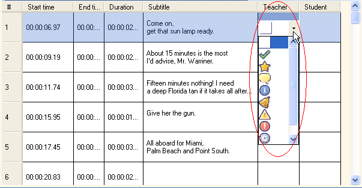
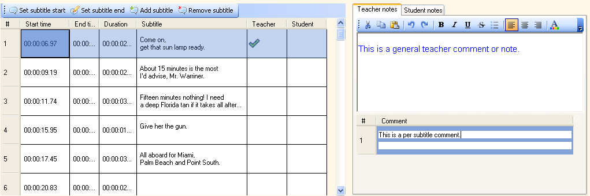

How do I write a per subtitle comment?
First, you have to choose an icon at the teacher comment column in the subtitle grid.
1. Click on the teacher comment cell of the subtitle row you want to add a comment to.
2. Select the comment icon.

A line will be created in the lower part notes area. Click in this line and type your comment.

If you have more than one per-subtitle comments, you can click on them to go directly to the corresponding subtitle in the subtitle grid.
The same procedure can be followed for student comments